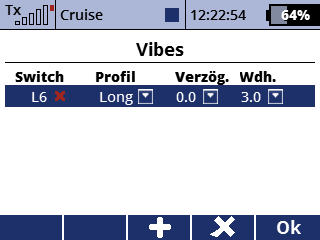

Vibes

Beschreibung
Mit dieser App können Sie die Ereignissteuerung des haptischen Vibrators in Ihrem DS-12-Sender einrichten. Es ähnelt dem Menü "Sprachausgabe/Ereignis".
Verwendung
Drücken Sie F3(+), um ein neues Steuerelement hinzuzufügen. Wählen Sie dann einen Schalter für das Ereignis und das Vibrationsprofil aus. Sie können auch eine Verzögerung vor dem ersten Signal und eine Verzögerung zwischen den Wiederholungen einstellen.
Sie können den Quellcode aus dem SoarJETI GitHub-Repository herunterladen.